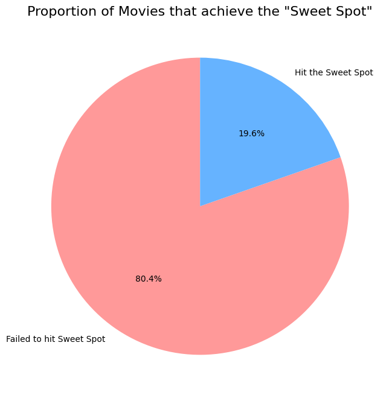
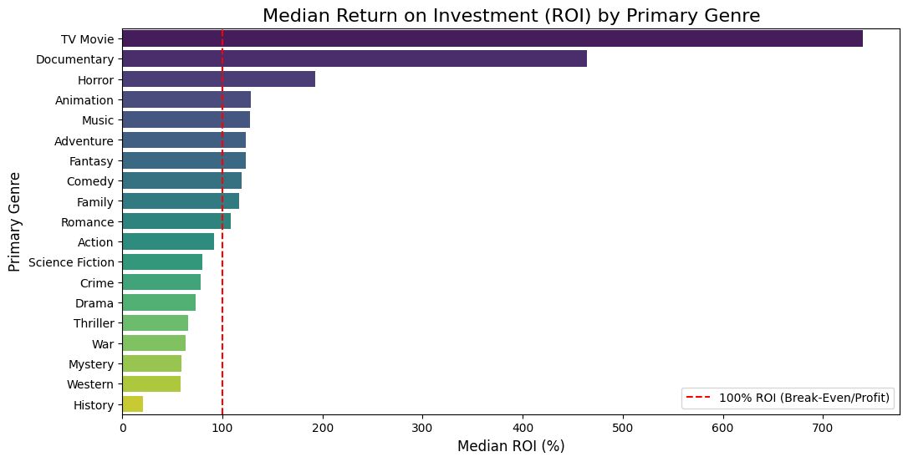
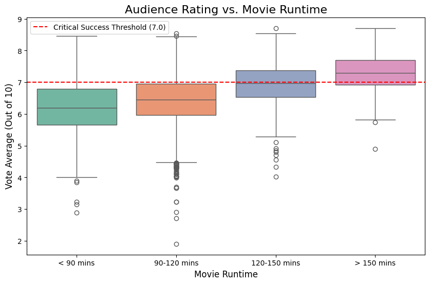
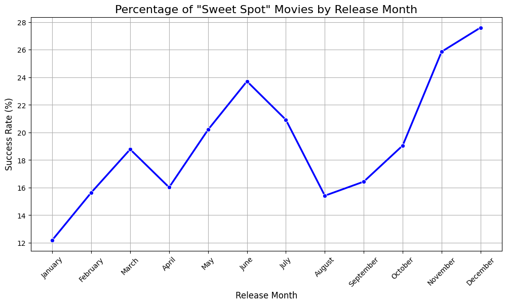
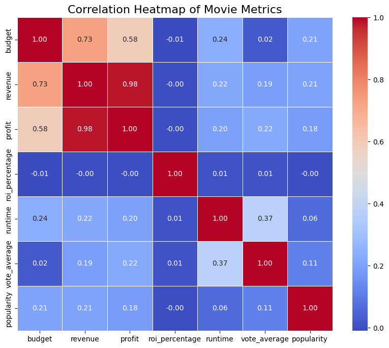
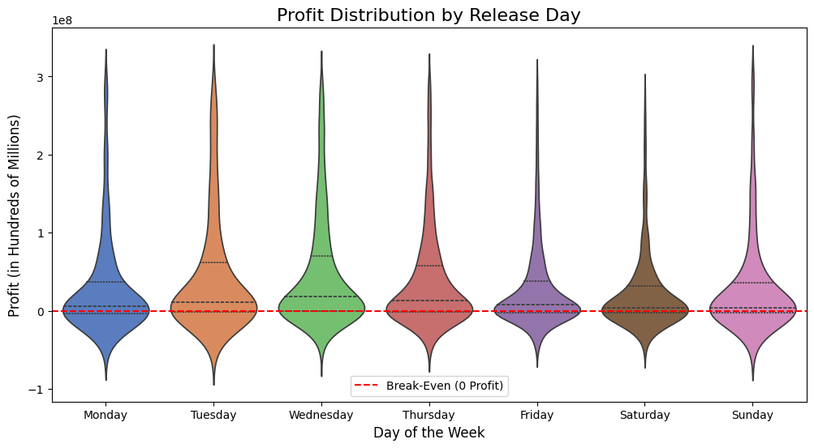
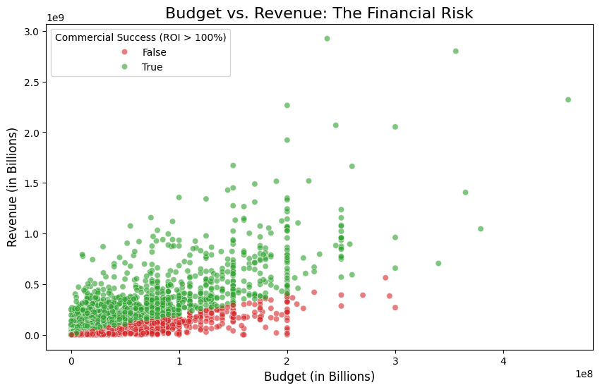
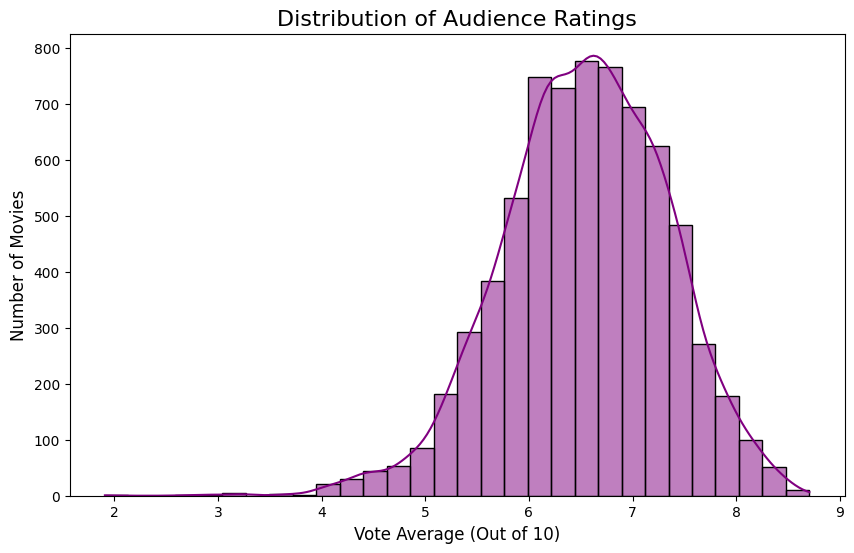

The Data-Driven Filmmaker's Playbook
5 Concrete Rules for a Successful Debut Movie
Based on the analysis of 7,070 films (cleaned from 60,000 raw TMDB entries), we isolated the exact characteristics of movies that achieve the "Sweet Spot" — over 100% Return on Investment AND an audience rating of 7.0+.

Only 1 in 5 movies achieves both commercial success and critical acclaim
The Sweet Spot is Rare
Only 19.6% of movies (1,389 out of 7,070) ever hit the Sweet Spot. The other 80.4% fail to achieve both profitability and critical acclaim at the same time.
Data-Driven Insights
Every recommendation is backed by statistical analysis of thousands of films, revealing patterns invisible to intuition alone.
Actionable Rules
No vague advice. Each rule provides specific, measurable guidance you can apply directly to your debut film project.
ROI-Focused
Learn which genres, runtimes, and release strategies maximize your return on investment without requiring massive budgets.
The 5 Rules
Follow these data-backed principles to drastically increase your probability of success
Choose the Right Genre
The Data
Horror is the best genre for a debut filmmaker, with a median ROI of ~193%. That means a typical Horror film earns back nearly 3x its production budget.
TV Movies (~740%) and Documentaries (~465%) technically rank higher, but those are niche formats. Among mainstream theatrical genres, Horror is the undisputed champion.
Actionable Advice
Avoid high-budget Action or Sci-Fi films for your debut. A Horror film is cheap to produce, relies on suspense rather than expensive CGI, and has a dedicated audience base that guarantees a high baseline of returns.

Median Return on Investment by Primary Genre

Audience Ratings by Movie Runtime
Aim for 120–150 Minutes
The Data
The box plot shows a clear and consistent pattern — the longer the movie, the higher the audience rating:
Only the 120–150 min and >150 min groups exceed the 7.0 critical success threshold.
Actionable Advice
Don't rush your edit. A movie in the 120–150 minute range hits the sweet spot — long enough to be taken seriously by audiences, but not so long that it becomes a logistical challenge for theaters.
Release in November or December
The Data
The line chart tracking monthly Sweet Spot success rates shows two clear peaks:
The worst months: January (12.2%), August (15.4%), February (15.6%). Less than 1 in 6 movies released in those months achieves both profitability and a good rating.
Actionable Advice
Plan your production schedule to target a late-year (Nov–Dec) or early summer (June–July) release. Avoid the "dump months" — January and August are when studios release films they have no confidence in.

Sweet Spot Success Rate by Release Month

Correlation Between Movie Metrics
Budget Does NOT Equal Quality
The Data
The correlation heatmap is the most important chart in this entire analysis. It shows the correlation between budget and audience rating is just 0.02 — essentially zero.
Low-budget films (under ~$6M) have a 61% success rate vs high-budget films (over ~$40M) which succeed only 53% of the time.
Actionable Advice
Do not go into debt to fund your first movie. The data mathematically proves that spending more money does not result in a better audience rating. Focus your limited budget on a great script and strong performances, not expensive equipment or locations.
Release Mid-Week, Not Friday
The Data
The violin plot reveals a surprising finding — Wednesday is the best day to release a movie, with the highest median profit at ~$22.5M.
Friday — the most popular release day (2,916 movies) — has a median profit of only ~$8.4M. The competition on Fridays is simply too fierce.
Actionable Advice
Consider a mid-week limited release (Wednesday or Tuesday) before expanding to wide release. You face less competition, critics have more time to review your film before the weekend, and the data shows median profits are significantly higher.

Profit Distribution by Release Day
Understanding the Landscape

Budget vs Revenue Reality
The scatter plot shows that success (green dots) appears at all budget levels. You don't need a massive budget to make money. Meanwhile, even some of the most expensive films are red dots — they spent hundreds of millions and still lost money.
High budgets are a gamble, not a guarantee.

The Rating Landscape
The average movie scores 6.54 out of 10. The distribution peaks around 6.5, and the vast majority of films fall between 5 and 8.
- Only 181 movies (2.5%) score 8.0 or above
- The largest group — 3,314 movies — falls in the 6–7 range
- Scoring above 7.0 puts you ahead of the majority
The bar is not as high as you think. A score of 7.0+ is achievable.
Ready to Make Your Debut Film?
Follow these 5 data-backed rules to maximize your chances of success
Methodology
How we analyzed 60,000 films to extract 5 actionable rules
Data Collection
Started with 59,998 films from TMDB (The Movie Database), including budget, revenue, ratings, runtime, genres, release dates, and more.
Data Cleaning
Filtered to only released movies with valid budget (>$0), revenue (>$0), at least 100 votes, and complete metadata. Result: 7,070 high-quality films.
Feature Engineering
Calculated ROI percentage, profit, primary genre, release month/day, runtime categories, and defined the "Sweet Spot" (ROI > 100% AND rating ≥ 7.0).
Statistical Analysis
Used median ROI by genre, box plots for runtime vs rating, correlation heatmaps, and distribution analysis to identify patterns.
Visualization
Created 8 key visualizations using Python (Matplotlib, Seaborn) to make insights immediately actionable for filmmakers.
Rule Extraction
Distilled findings into 5 concrete, measurable rules that debut filmmakers can apply directly to their projects.